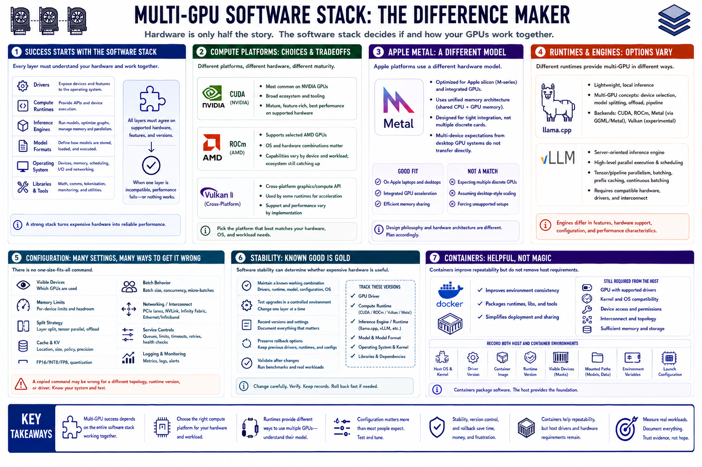

Software Stack and Driver Support
Connecting to LMS... Progress: in progress

Narration
Multi-GPU success depends on the software stack understanding the available devices. Drivers, compute runtimes, inference engines, model formats, operating system, and libraries must agree on supported hardware and features.
CUDA is a common NVIDIA compute platform. ROCm supports selected AMD hardware and operating-system combinations. Vulkan can provide cross-platform acceleration in compatible runtimes. Capability and maturity vary by device and workload.
Apple Metal supports acceleration on Apple platforms, usually through integrated unified-memory designs rather than a conventional collection of discrete cards. Multi-device expectations from desktop GPU systems should not be assumed to transfer directly.
llama.cpp provides multi-GPU concepts such as device selection and model splitting for supported backends. Server-oriented runtimes such as vLLM may offer parallel execution and scheduling at a high level, with different hardware and configuration requirements.
Configuration includes visible devices, memory limits, split strategy, cache, precision, batch behavior, networking, and service controls. A copied command may be wrong for a different topology or runtime version.
Maintain a known working combination of drivers, runtime, model, configuration, and operating system. Test upgrades, record versions, preserve rollback, and avoid changing several layers at once. Software stability can determine whether expensive hardware is useful.
Containers can improve repeatability but do not erase host-driver, device, kernel, and runtime requirements. Record both host and container environments, device visibility, mounted models, permissions, and launch configuration.